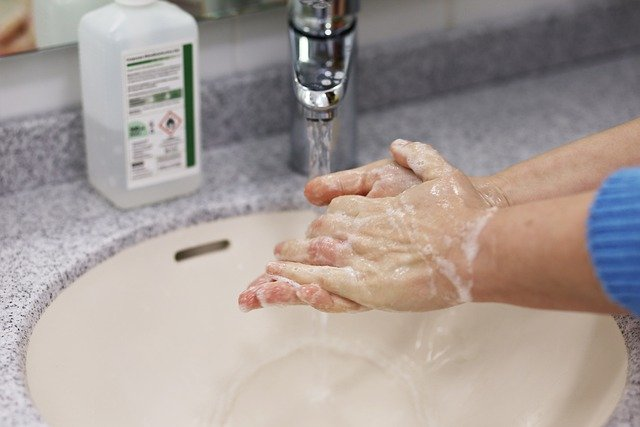
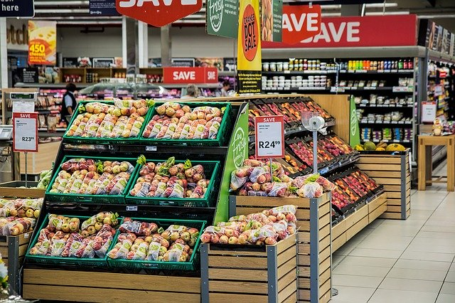

新型コロナウイルスとは？
人に感染する「コロナウイルス」として新たに見つかった感染症のことです。 もともとコロナウイルスは人に感染症を引き起こすものとしてこれまで6種類が知られていましたが、 今回新たに中国の武漢で新型が発見されその後世界中へと拡散されていきました。
-
どのように感染しますか？
一般的には、飛沫感染、接触感染で感染します。-
飛沫感染とは：
感染者の飛沫(くしゃみ、咳、つばなど)と一緒にウイルスが放出され、他の方がそのウイルスを口や鼻などから吸い込んで感染します。 -
接触感染とは：
感染者がくしゃみや席を手で押さえた後、その手で周りの物に触れるとウイルスがつきます。他の方がそれを触れるとウイルスが手に付着し、その手で口や鼻を触ると粘膜から感染します。
-
飛沫感染とは：
-
潜伏期間は？
1~14日で平均5.8日と報告されています。 -
症状は？
初期症状では軽症で、発熱や咳など風邪のような症状が見られるほか、嗅覚・味覚障害が生じることがあります。また重症化すると肺炎を発症します。
しかしながら、無症状の場合もありその場合知らないうちに感染を拡大させているかもしれないところがこのウイルスの特徴ともいえます。 -
ペットには感染しますか？
現時点ではペットに感染した事例は見つかっておりません。 -
感染が疑われる場合の行動は？
感染が疑われる場合、まずは外出を控えていただき 「帰国者・接触者相談センター」までお電話でのご相談をお願いいたします。
3つの"密"とは?
3つの"密"を避けよう！！！
- 密 閉空間
- 密 集場所
- 密 接場所
今できること
-
不要不急の外出をしない
感染を防ぐために最大の効果を持つ方法です。
自分自身を守るだけでなく、他者の命を救うことにもつながります。不要不急の外出は避け、どうしても外出をしなければならない場合は3密を避けた行動を徹底しましょう。 -

こまめに手洗いをする
こまめに手を洗うことでウイルスを流すことができます。
手洗い後に十分に水で流し、清潔なタオル類でよく拭き取って乾かしましょう。
外出後・食事の前には必ず手を洗う習慣をつけていきましょう。 -

適切な量を買う
買い占めにより、商品棚が空になっていると不安をさらに煽り品薄が加速する傾向にあります。
商品の生産、物流は滞っていないので今まで通り必要最低限の購入をすることが望まれます。 -

咳エチケットをする
咳・くしゃみをするときはティッシュなどで口と鼻を覆います。 使用したティッシュはすぐゴミ箱に捨てましょう。 ティッシュなどが近くにない場合、手で覆いすぐに手を洗いましょう。
また、咳・くしゃみが続くときはマスクをつけましょう。 マスクは鼻と口を覆うことが重要です。 -
十分な睡眠とる
ウイルスなど、外部からの侵入者から体を守仕組みである免疫は睡眠と密接な関係があります。感染を防いだり、もし羅漢してしまった場合にも病気と闘うための体力回復のためにも睡眠は必要不可欠です。
-

バランスの良い食事を摂る
免疫能を維持するには、栄養バランスの摂れた食事により栄養不良を起こさないようにすることが第一に必要になります。栄養のバランスが崩れ、免疫能が低下している人には、食事により、免疫能を回復することが可能になります。